Aligned Xperience-10M sample windows
5,821 frames become 1,161 synchronized 20-frame windows with an explicit 8,378-d feature contract.
A compact research lab for the public Xperience-10M sample from Ropedia: video, audio, depth, pose, motion capture, inertial sensing, and language annotation, with explicit minimal and neural MLP baselines over the same current feature vector. Next TODO: Qwen3-Omni fine-tuning plus sensor-bridge evaluation on multi-episode splits.
mocapcamera+imudepthvideolanguagestaticA top-level project should make its proof boundary visible. This ledger separates verified single-episode artifacts from smoke-only Qwen3-Omni work and the pending 32-episode gate.
5,821 frames become 1,161 synchronized 20-frame windows with an explicit 8,378-d feature contract.
Every task has a minimal interpretable head and a matching neural MLP run over the same windows, splits, and task contract.
The Ropedia directions are labeled as direct, proxy, or diagnostic evidence, plus one coded extension probe per direction.
The H20/A100 pipeline exists, but current Qwen3-Omni artifacts use one episode and 128 train windows. No 32-episode metric is claimed.
The validator checks required assets, raw-data exclusion, Python cache exclusion, heavy archive exclusion, and accidental HF token strings across GitHub and the HF bundles.
The site validator checks local links, anchors, JSON bundles, and referenced image dimensions before publishing.
World-class research packaging should be easy to audit. This path tells a reviewer exactly what to open first, what each artifact proves, and where the current proof boundary stops.
Start with the evidence contract, artifact index, publication audit, and website integrity report. They separate verified single-episode artifacts from smoke-only Qwen3-Omni work.
Use the window table and feature manifest to see the exact aligned sample unit, feature blocks, dimensions, and omitted audio feature status.
Every task has a small interpretable baseline and a matching neural MLP head over the same feature contract and chronological split.
The multi-episode Qwen3-Omni path is prepared, but no real 32-episode result is claimed until the data gate and held-out evaluation pass.
The top-level map shows the Xperience-10M sample modalities and the verified 12-task results. Audio is present in the sample MP4 stream, but the current 8,378-d baseline manifest does not featurize it.

These cards expose the same public-sample modality thumbnails as native webpage elements, so reviewers can inspect each stream clearly on desktop and mobile.
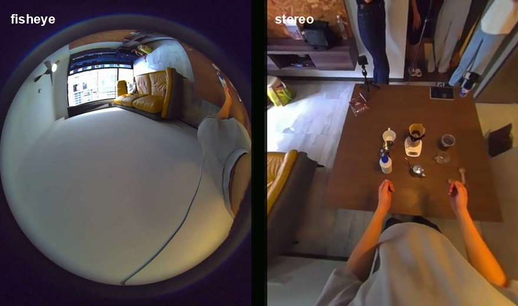
6 synchronized camera MP4 streams
RGB/fisheye/stereo frame statistics
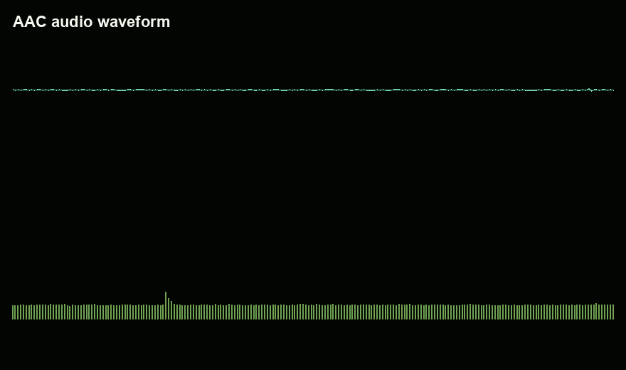
AAC stream embedded in MP4
Documented, not featurized in the 8,378-d vector
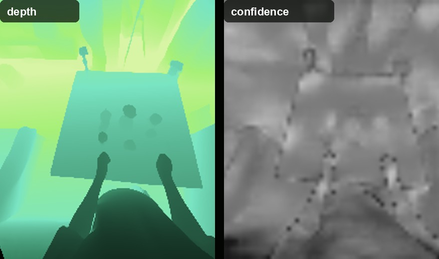
Depth map + confidence channel
Spatial geometry feature block
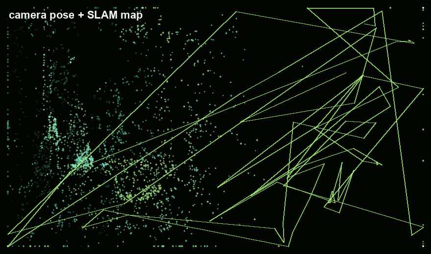
Trajectory + sparse SLAM map
Position + orientation features
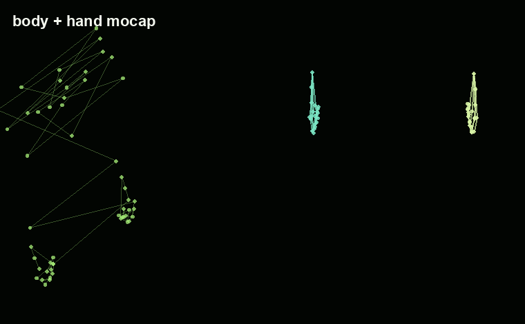
Body + hand joint tracks
3D mocap feature statistics
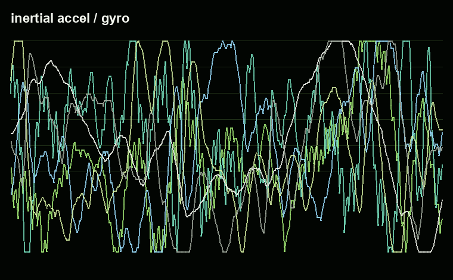
Accelerometer + gyroscope
Wearable motion statistics
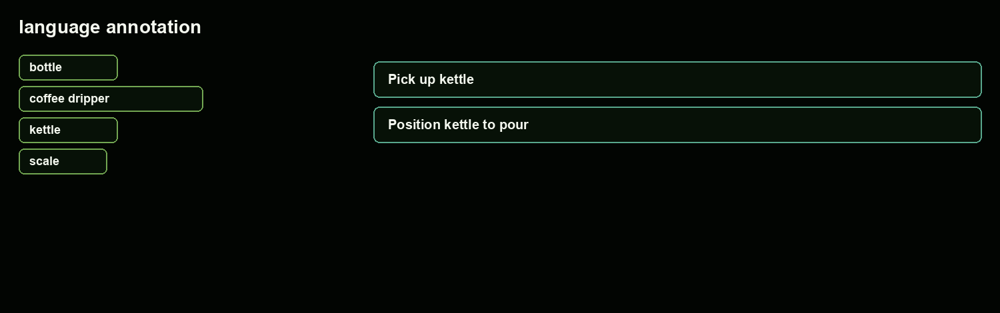
Object tags + action captions
Task labels + semantic targets
The atlas redistributes only small derived thumbnails and metadata. Raw MP4, HDF5, and RRD files remain excluded from this repo and the Hugging Face mirrors.
Every script works from one data contract: aligned multimodal windows, explicit labels, cached feature extraction, and a manifest that makes omitted modalities visible.

It proves the full engineering loop: reading Xperience-10M sample data, aligning modalities, converting them into model-ready windows, defining meaningful tasks, producing metrics, and packaging every artifact for review.
It does not claim general embodied intelligence. A single episode cannot support cross-environment generalization; that requires many episodes and held-out episode splits.
Motion-only and current all-feature classifiers use lightweight heads so the comparison stays readable on a laptop and easy to audit. The neural run keeps the same features and splits, then swaps in PyTorch MLP heads.
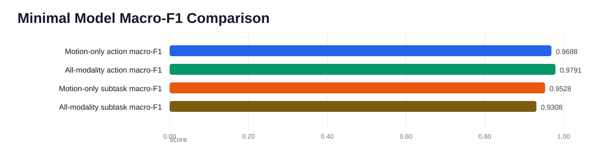
The neural baseline uses small PyTorch MLP classifiers/regressors on the same 8,378-d window features, chronological splits, and leakage filters. This isolates the value of a nonlinear head before moving to heavier Qwen/Omni experiments.
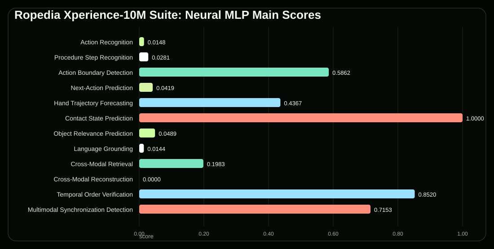
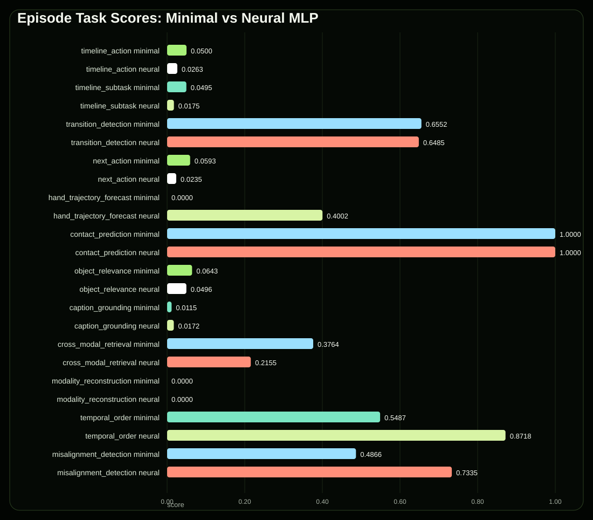
Each task is mapped as direct, proxy, or diagnostic evidence for the Ropedia research tracks. The mapping uses two current baselines: minimal interpretable heads and neural MLP heads over the same feature contract.
Direct evidence comes from hand trajectory forecasting and contact prediction; action and object relevance are supporting proxies.
Cross-modal retrieval, modality reconstruction, and misalignment detection check reconstruction prerequisites, not full geometry.
Action, subtask, transition, next-action, object, caption, order, and alignment tasks directly stress egocentric understanding.
Current probes cover task state, object relevance, retrieval, reconstruction, temporal order, and alignment but no persistent map yet.
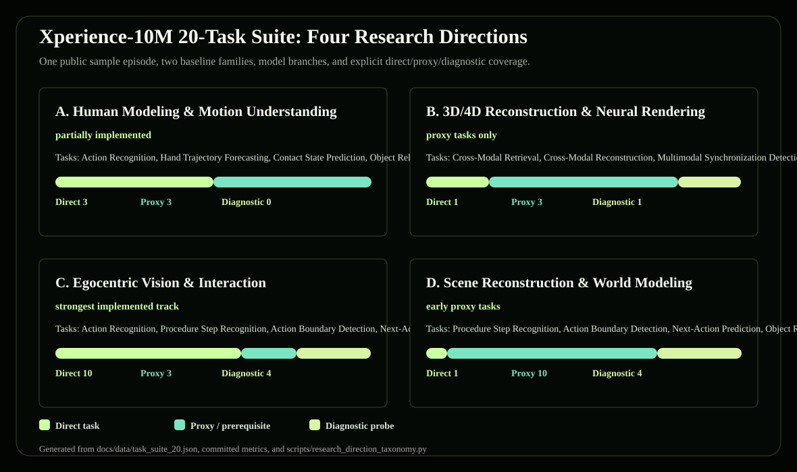
Softmax, logistic, ridge, and retrieval heads keep every input/output contract readable. They are the first sanity check for whether a task is well-posed.
Small PyTorch MLP classifiers/regressors reuse the same features and splits. They test nonlinear gains before heavier Omni fine-tuning.
These are new data-backed extension tasks computed from the same single-episode feature tensor. They add one concrete input, process, output, and metric for each research direction, while keeping the single-episode limitation explicit.

Case: classify fast reach/pour windows as high motion and steady holding windows as low motion.
Input: non-mocap video, depth, pose, IMU, SLAM, calibration, and language features.
Output: high_motion or low_motion.
Case: retrieve the synchronized stereo-left window from a fisheye-camera query.
Input: fisheye_cam0 video features against stereo_left candidate features.
Output: ranked synchronized view candidates.
Case: estimate whether a Pour coffee window is near the start, middle, or end of its action segment.
Input: non-caption multimodal features.
Output: 0-to-1 progress inside the current action.
Case: predict how the camera translation changes over the next 20 frames.
Input: current sensors excluding camera translation and captions.
Output: future camera-translation delta vector.
The four research directions now have coded extension probes, prediction/rank CSVs, JSON metrics, a Markdown summary, and a website chart generated from real sample-window features.
A full research result still needs many Xperience-10M episodes, held-out episode splits, stronger encoders, and direction-specific models such as body priors, renderers, or persistent scene graphs.
The diagram separates the shared episode-window feature pipeline from the task-specific heads, and notes that audio remains dataset context rather than a current baseline feature block.

Each task is explained as a case study with input, middle process modules, and output. The full generated guide is committed as Markdown and JSON.
Case: a pouring window should map to the current action, such as Pour coffee.
Case: a fine action is grouped into a broader drink-preparation stage.
Case: detect the moment the demonstrator changes from preparing to pouring.
Case: a preparing-to-pour window should predict the action 20 frames later.
Case: when a hand moves toward a cup, predict the future 3D hand path.
Case: decide whether the hand/body is touching an object or surface.
Case: during pouring, infer relevant objects such as milk, cup, or coffee.
Case: a query like Pour milk into coffee should retrieve the matching moment.
Case: motion and IMU from pouring should retrieve the matching depth/video window.
Case: infer compressed depth/video features from motion, IMU, and camera pose.
Case: tell whether reaching then pouring has been reversed.
Case: detect motion from pouring paired with video/depth shifted later.
The same 12 tasks are kept filterable here so the supervised, forecast, retrieval, and diagnostic probes can be inspected individually.
All featurized modalities to current action label. Chronological split exposes unseen future actions.
All featurized modalities to current subtask label. Useful for segmentation diagnostics.
Predict steady vs action boundary. Highlights task-transition localization quality.
Current multimodal window to action 20 frames later. Tests short-horizon task flow.
Predict future left/right hand 3D joints. Closer to imitation-learning style signals.
Non-contact modalities to binary contact. Degenerate in this sample because one class dominates.
Predict relevant object set from non-caption feature blocks.
Caption objects/interaction query to matching sensor window.
Motion/IMU/camera query retrieves matching depth/video window. Strongest single-episode signal.
Motion/IMU/camera to depth/video feature vector.
Two adjacent windows to correct vs reversed order.
Motion+visual pair to aligned vs shifted by eight windows.
The point is not hidden complexity. Every block has a source modality, a dimensional footprint, and a manifest entry.
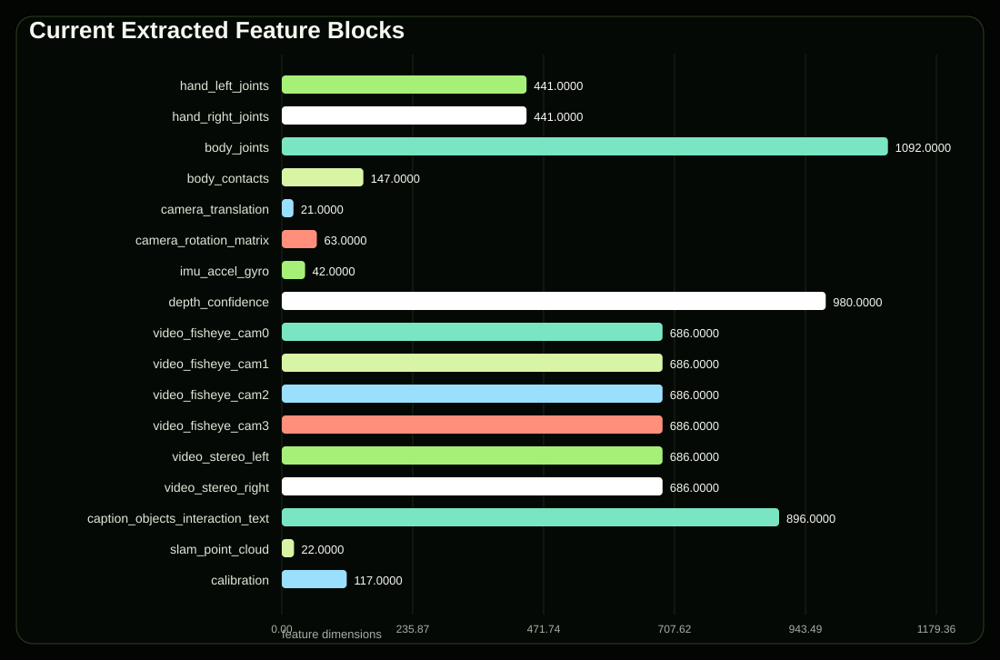
The charts make the main lesson visible: within-episode supervised labels are easy under some splits, while retrieval, grounding, forecasting, and alignment remain the useful probes.
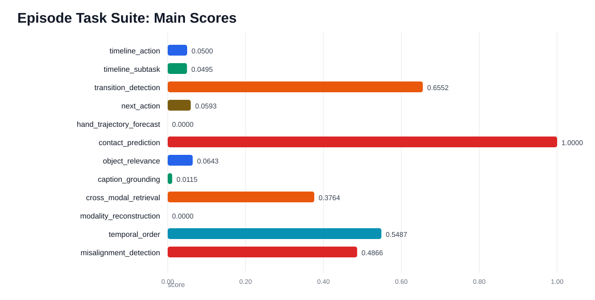
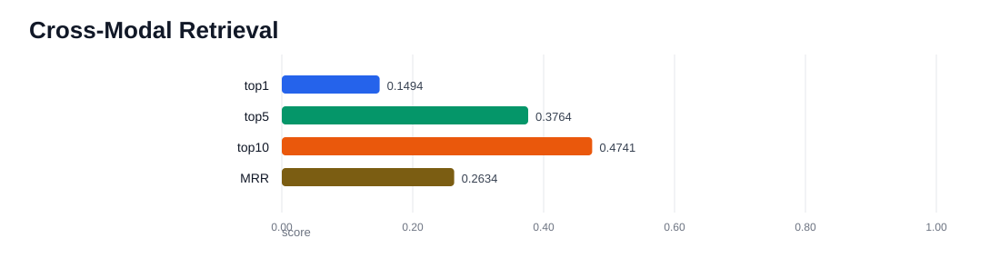
Metrics, predictions, confusion matrices, manifests, lightweight model weights, and derived window artifacts are committed so the repo is reviewable before rerunning anything. Raw Xperience-10M data and Qwen weights are not redistributed.
These files tell a reviewer what is actually claimed, which artifacts prove it, and where the current scale-up boundary stops.
Human-readable map from proof boundary to data contract, task evidence, platform mirrors, and scale-up status.
Defines verified, smoke-only, blocked, and out-of-scope claims.
EVIDENCE_CONTRACT.mdSelective source-of-truth catalog with existence checks, sizes, and stable-file hashes.
artifact_index.jsonChecks raw-data exclusion, cache exclusion, heavy-archive exclusion, and token-string hygiene.
publication_audit.jsonChecks local links, anchors, JSON files, and referenced website image dimensions.
website_integrity.jsonMachine-readable 90-second reviewer path and proof boundary summary.
reviewer_packet.jsonThese artifacts show the exact sample windows, feature blocks, task contracts, metrics, walkthroughs, and research-direction mapping.
One JSON file with every task definition, split detail, and metric.
summary_report.jsonWindow start/end frames and aligned action/subtask labels.
windows.csvStart/end index and dimension for every current feature block.
feature_manifest.jsonPer-task PyTorch MLP metrics, predictions, histories, and checkpoints for the same 12 task contracts.
neural_mlp/Generated JSON, CSV, Markdown, and website data mapping all 12 tasks to the four research tracks.
research_directions/Four coded probes, one per research direction, with minimal and neural metrics plus prediction/rank CSVs.
research_direction_extensions/Case studies for all 12 tasks, including input, middle process modules, output, metric, and limitation.
task_walkthroughs/The strongest self-supervised signal from the single episode.
metrics.jsonThe same evidence is mirrored across GitHub Pages, Hugging Face, scripts, and lightweight baseline model repositories.
Training, visualization, taxonomy, walkthrough, validator, and omni-readiness scripts.
scripts/Classifier metrics, predictions, confusion matrix, and model weights.
metrics.jsonThe dashboard packaged as a public static Space.
HF SpaceMetrics, predictions, docs, and lightweight derived files without raw data redistribution.
dataset repoMinimal NumPy softmax, ridge baselines, and neural task-head model files.
model repoSpace, artifacts, and model baselines grouped into one public project collection.
collectionThe multi-episode Qwen3-Omni path is documented and scripted, but no full-pilot metric is claimed until the data gate and held-out evaluation pass.
HF full-dataset access is pending; an A100 watcher is ready to download and transfer a 32-session pilot.
A100_HF_RELAY_STATUS.mdManifests, metadata, metrics, and progress logs from the current smoke/evidence run.
episode_manifest.jsonThe readiness gate remains the source of truth before any full pilot training claim.
DATA_BLOCKER_REPORT.mdThe full Xperience-10M Hugging Face dataset is gated. While access is pending, the A100 relay has already selected a 32-episode pilot across 32 different session UUIDs and will continue automatically after approval.
Stratified round-robin over 64 top-level sessions; 680 complete candidates scanned; 32 sessions selected.
A100 downloads from Hugging Face, excludes visualization.rrd, validates files, then rsyncs to H20.
The current LoRA artifact is a smoke/pilot checkpoint. A real 32-episode result requires the watcher to finish and held-out evaluation to run.
Raw Xperience-10M data is not redistributed here. The public reproduction contract states the commands, expected outputs, exact-match audit evidence, and current non-reproducible scale-up boundary.
Human-readable commands, expected artifacts, and boundaries for the public single-episode pipeline.
REPRODUCIBILITY.mdMachine-readable command matrix covering sample download, baselines, 12 tasks, figures, and validation.
reproducibility_matrix.jsonThe last metric audit rebuilt the public-sample outputs from fresh cache and matched the committed metrics.
reproducibility_audit.mdLocal HTML references, anchors, JSON bundles, and image dimensions checked before publishing.
website_integrity.jsonThe 32-episode Qwen3-Omni pilot is prepared but not publicly reproducible until gated data access and held-out evaluation pass.
DATA_BLOCKER_REPORT.mdMinimal path: install the toolkit dependencies, download the official sample, run the 12-task suite with neural heads, regenerate visualizations, then run the artifact index and publication validator.
git clone https://github.com/Ropedia/HOMIE-toolkit.git
python3.12 -m venv .venv
source .venv/bin/activate
pip install -r HOMIE-toolkit/requirements.txt huggingface_hub hf_xet
git clone https://github.com/ChaoYue0307/ropedia-xperience-10m-task-suite.git
pip install -r ropedia-xperience-10m-task-suite/requirements.txt
pip install torch
hf download ropedia-ai/xperience-10m-sample \
--repo-type dataset \
--local-dir data/sample/xperience-10m-sample
cd ropedia-xperience-10m-task-suite
export WORKSPACE=/path/to/workspace
python scripts/episode_task_suite.py --workspace "$WORKSPACE" --include-neural
python scripts/research_direction_extension_tasks.py
python scripts/task_walkthroughs.py
python scripts/generate_visualizations.py
python scripts/render_overview_figures.py
python scripts/render_task_suite_infographic.py
python scripts/export_modality_atlas_assets.py
python scripts/validate_website_integrity.py
python scripts/build_artifact_index.py
python scripts/validate_publication_package.py